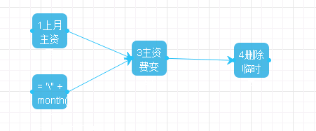

1. 时间表达式(Cron表达式)
1.1. 基本语法
Cron表达式是一个字符串，字符串以5或6个空格隔开，分为6或7个域，每一个域代表一个含义，Cron有如下两种语法格式：
Seconds Minutes Hours DayofMonth Month DayofWeek Year
秒钟 分钟 小时 天（号数） 月份 星期 年份
Seconds Minutes Hours DayofMonth Month DayofWeek
秒钟 分钟 小时 天（号数） 月份 星期
各域取值范围依次为 ：
Seconds: 可出现“, - * /”四个字符，有效范围为0-59的整数
Minutes: 可出现“, - * /”四个字符，有效范围为0-59的整数
Hours: 可出现“, - * /”四个字符，有效范围为0-23的整数
DayofMonth:可出现“, - * / ?”五个字符，有效范围为1-31的整数
Month: 可出现“, - * /”四个字符，有效范围为1-12的整数
DayofWeek: 可出现“, - * / ?”五个字符，有效范围为1-7的整数或SUN-SAT两个范围。1表示星期天，2表示星期一， 依次类推。
Year: 可出现“, - * /”四个字符，有效范围为2017-9999年
各个字符含义：
*：表示匹配该域的任意值，如在Minutes域使用*, 即表示每分钟都会触发事件。
-：表示范围，如在Minutes域使用5-20，表示从5分到20分钟每分钟触发一次。
,：表示列出枚举值，如在Minutes域使用5,20，表示在5和20分各触发一次。
/：表示起始时间开始触发，然后每隔固定时间触发一次，例如在Minutes域使用5/20,表示首先在第5分钟触发一次，然后每隔20分钟触发一次（25，45）。
?：只能用在DayofMonth和DayofWeek两个域。因为DayofMonth和DayofWeek会相互影响。例如想在每月的20日早上9点15分触发调度，不管20日到底是星期几，则只能使用如下写法：0 15 9 20 * ?, 其中DayofWeek只能用?而不能用*。
同理，假定每周一早上10点15分触发调试，不管是几号，则只能使用如下写法：
0 15 10 ? * MON，其中DayofMonth只能使用?而不能使用*。
1.2. 使用示例
0 15 10 ? * * 每天上午10:15触发
0 15 10 * * ? 每天上午10:15触发
0 15 10 * * ? * 每天上午10:15触发
0 15 10 * * ? 2017 2017年的每天上午10:15触发
0 * 14 * * ? 在每天下午2点到下午2:59期间的每1分钟触发
0 0/5 14 * * ? 在每天下午2点到下午2:55期间的每5分钟触发
0 0/5 14,18 * * ? 在每天下午2点到2:55期间和下午6点到6:55期间的每5分钟触发
0 0-5 14 * * ? 在每天下午2点到下午2:05期间的每1分钟触发
0 15 10 ? * MON-FRI 周一至周五的上午10:15触发
0 10,30 14 ? 3 WED 每年三月的星期三的下午2:10和2:30触发
2. 名词术语
节点 进行一系列处理中的其中一个步骤，称为节点，每一个节点都有明确的目标，以及实现这个目标后的阶段性进展。
流 多个节点按业务处理的先后顺序连接起来，称之为流，一个完整的流即对应一个完整的业务需求。
任务 在Abp新框架的Web页面上，将上面的“节点”也称之为“任务”。
任务组 在Abp新框架的Web页面上，将上面的“流”也称之为“任务组”。
3. 命令操作及相关函数
注：所有操作函数的调用，语句都必须加分号结尾。
3.1. 选定接下来要进行操作的数据库
3.1.1. 根据名称进行选择
/// <summary>
/// 选定当前要运行的数据库
///
</summary>
/// <param name="dbName">数据库名称</param>
/// <returns>执行成功返回true，执行失败返回false</returns>
public bool setnowdb(string dbName)
使用示例：setnowdb("本地中心库");
将选中名为“本地中心库”的数据库，作为接下来脚本执行的位置，直到再次重新选择数据库或本节点执行完成结束。
注：log()函数不受本函数影响，所有日志均写在本地数据库。
3.1.2. 根据ID进行选择
/// <summary>
/// 设置当前数据库byID
///
</summary>
/// <param name="dbid">数据库服务器ID</param>
/// <returns>执行成功返回true，执行失败返回false</returns>
public bool setnowdbid(long? dbid)
使用示例：setnowdbid(1);
将选中ID为“1”的数据库，作为接下来脚本执行的位置，直到再次重新选择数据库或本节点执行完成结束。
注：log()函数不受本函数影响，所有日志均写在本地数据库。
3.2. 日志记录
/// <summary>
/// 写日志
///
</summary>
/// <param name="message">日志内容</param>
/// <param name="logLevel">日志等级（默认等于4级，数据越小，等级越高）</param>
/// <param name="sql">SQL脚本（默认为空）</param>
/// <returns>执行成功返回true，执行失败返回false</returns>
public bool log(string message, int logLevel = 4, string sql = "")
使用示例：
log("这是一段日志信息");
log("这是一段告警日志信息", 3);
log("这是一段日志信息",3,"SELECT * FROM T");
向本地数据库写入日志，一般放在脚本的几个关键环节，用来跟踪脚本的执行状态。比如：
log("下面查询A表了");
exec("SELECT * FROM A");
log("下面查询B表了");
exec("SELECT * FROM B");
/// <summary>
/// 写日志（默认日志等级为4级）
///
</summary>
/// <param name="message">日志内容</param>
/// <param name="sql">SQL脚本</param>
/// <returns>执行成功返回true，执行失败返回false</returns>
public bool log(string message, string sql)
使用示例：
log("这是一段日志信息", "SELECT * FROM T");
参数同时包含日志内容、SQL语句，主要用来调试SQL的执行情况，看看最终执行的SQL是什么。
3.3. 执行SQL语句
/// <summary>
/// 执行SQL语句
///
</summary>
/// <param name="sql">SQL语句</param>
/// <returns>执行成功返回true，执行失败返回false</returns>
public bool exec(string sql)
使用示例：
exec("SELECT * FROM T");
如果sql比较长，需要换行时，注意在双引号前加一个“@”，如：
exec(@"INSERT INTO T (
ID_NO,
LOGIN_NO,
OP_TIME,
OP_SN,
OP_NOTE,
REMARK1,
REMARK2,
REMARK3
)
SELECT A.ID_NO,
A.LOGIN_NO,
A.OP_TIME,
A.LOGIN_ACCEPT,
A.REMARK,
'主资费变更',
'变更前资费：'||B.PROD_PRC_NAME,
'变更后资费：'||A.PROD_PRC_NAME
FROM JH002_TMP_DY A,
JH002_TMP_SY B
WHERE A.ID_NO=B.ID_NO
AND A.RN=1
AND B.RN=1");
/// <summary>
/// 执行SQL语句
///
</summary>
/// <param name="sql">SQL语句</param>
/// <returns>执行成功返回true，执行失败返回false</returns>
public bool execute(string sql)
用法和exec()完全一样，多一种写法是为了和上一个版本兼容。
3.4. 判断表是否存在
/// <summary>
/// 判断数据库中表是否存在
///
</summary>
/// <param name="tableNames">表名，可以为多张表，表名以逗号分隔（表名区分大小写，一般情况下建议大写）</param>
/// <returns>所有表均存在则返回为true，反之返回false</returns>
public bool is_table_exists(string tableNames)
使用示例：
if (is_table_exists("A"))
{
log("表A存在。");
}
if (is_table_exists("A,B,C"))
{
log("表A、B、C均存在。");
}
3.5. 清空及删除表
/// <summary>
/// 清空表
///
</summary>
/// <param name="tableNames">表名，可以为多张表，表名以逗号分隔，表名会忽略大小写</param>
/// <returns>执行成功返回true，执行失败返回false</returns>
public bool truncate_table(string tableNames)
使用示例：
if (truncate_table("A"))
{
log("已经清空了A表中的所有记录。");
}
else
{
log("清空A表失败。", 3);
}
truncate_table("A,B,C");
/// <summary>
/// 删除表
///
</summary>
/// <param name="tableNames">表名，可以为多张表，表名以逗号分隔，表名区分大小写（一般情况下建议大写）</param>
/// <returns>执行成功返回true，执行失败返回false</returns>
public bool drop_table(string tableNames)
使用示例：
if (drop_table ("A"))
{
log("已经删除了A表。");
}
else
{
log("删除A表失败。", 3);
}
drop_table ("A,B,C");
3.6. 查询数据并返回结果
/// <summary>
///执行SQL语句返回第一行第一列
///
</summary>
/// <param name="sql">sql语句</param>
/// <returns>返回执行语句结果</returns>
public object execute_scalar(string sql)
使用示例：
object count = execute_scalar("SELECT COUNT(*) FROM A");
object maxid = execute_scalar("SELECT MAX(ID) FROM A");
log("表A共有记录" + count.ToString() + "条，最大ID为" + maxid.ToString());
/// <summary>
/// 执行SQL语句返回第一行第一列
///
</summary>
/// <param name="sql">sql语句</param>
/// <returns>返回执行语句结果</returns>
public object exec_scalar(string sql)
功能及使用方法：与execute_scalar(string sql)完全相同，就是写法简单点。
/// <summary>
/// 执行SQL语句返回第一行第一列
///
</summary>
/// <param name="sql">sql语句</param>
/// <returns>返回执行语句结果</returns>
public object exec_obj(string sql)
功能及使用方法：与execute_scalar(string sql)完全相同，就是写法简单点。
/// <summary>
/// 执行SQL语句，返回执行语句结果集
///
</summary>
/// <param name="sql">SQL查询语句</param>
/// <returns>DataTable结果集</returns>
public DataTable execute_datatable(string sql)
使用示例：
DataTable dt = execute_datatable("SELECT * FROM A");
执行查询SQL语句，并将查询返回结果赋值给变量dt，类型为DataTable。
/// <summary>
/// 执行SQL语句，返回执行语句结果集
///
</summary>
/// <param name="sql">SQL查询语句</param>
/// <returns>DataTable结果集</returns>
public DataTable exec_table(string sql)
功能及使用方法：与execute_ datatable (string sql)完全相同，就是写法简单点。
3.7. 查询并将结果写入文件
/// <summary>
/// 查询数据并写到本地文件
///
</summary>
/// <param name="sql">SQL语句</param>
/// <param name="fileName">文件名</param>
/// <param name="pageSize">分页大小，每一页写一个文件</param>
/// <returns>输出文件所在的路径</returns>
public string down_db(string sql, string fileName, int pageSize = 1000000)
使用示例：
down_db("SELECT * FROM A", "DB_A_FILE");
查询结果将写在程序目录：UpFiles\DownDB\DB_A_FILE\目录下，根据查询结果数量多少，可能有一个或多个数据文件，每个文件最多100万条记录。另外还会创建一个建表脚本文件，为针对这些查询结果的建表语句。
down_db("SELECT * FROM B", "DB_B_FILE", 1000);
查询结果将写在程序目录：UpFiles\DownDB\DB_B_FILE\目录下，根据查询结果数量多少，可能有一个或多个数据文件，每个文件最多1000条记录。另外还会创建一个建表脚本文件，为针对这些查询结果的建表语句。
/// <summary>
/// 导出表写入文件并将文件压缩打包，生成的文件路径：~/UpFiles/DownDB/{tableName}.zip
///
</summary>
/// <param name="sql">sql语句</param>
/// <param name="zipFileName">压缩文件名（不包含后缀名）</param>
/// <returns>文件全名,含路径</returns>
public string down_db_to_file(string sql, string zipFileName)
使用示例：
down_db_to_file("SELECT * FROM A", "DB_A_FILE");
相当于在执行down_db("SELECT * FROM A", "DB_A_FILE")之后，将这些文件打包，成为一个.zip的压缩包，并返回该压缩包的全路径名。
3.8. 查询并将结果写入另外的表
/// <summary>
/// 数据库里面表到表的数据复制
///
</summary>
/// <param name="sql">SQL查询语句</param>
/// <param name="destTableName">生成的目标表名</param>
/// <param name="destDBName">导入的目的数据库</param>
/// <param name="isCreatTable">0表示不创建表;1(默认值)表示自动创建表(在导数据之前，要删除已经存在表</param>
/// <param name="pageSize">页面大小（分批查询导入，每批次记录条数，超过10万则会自动使用先写文件再导文件的方式）</param>
/// <returns>复制记录条数</returns>
public int down_db_to_db(string sql, string destTableName, string destDBName, int isCreatTable = 1, int pageSize = 50000)
使用示例：
setnowdb("远程集市库");
int i = down_db_to_db("SELECT * FROM A", "A", "本地中心库", 1, 10000);
log("从远程集市库中查询A表，共" + i + "条记录导入了本地中心库的A表");
setnowdb("本地中心库");
object count = execute_scalar("SELECT COUNT(*) FROM A");
log("本地中心库A表共有记录" + count.ToString() + "条记录");
if (i == Convert. ToInt32 (count))
{
log("对啊对啊，真有那么多记录！");
}
else
{
log("不对啊，你骗我，明明数量不是那么多。");
}
3.9. 高效取数：将查询结果写入另外的表
本方法在使用上与down_db_to_db()没有什么不同，区别在于处理时，它会同时进行查询与导入。一边查询，一边写入，这样可以更加节省时间。
注：由于导数的压力主要在数据库上，如果查询和写入都处于同一数据库，本方法的意义就不大了。
/// <summary>
/// 使用异步方式将查询结果写入指定表
///
</summary>
/// <param name="sql">SQL查询语句</param>
/// <param name="destTableName">生成的目标表名</param>
/// <param name="destDBName">导入的目的数据库</param>
/// <param name="isCreatTable">0表示不创建表;1(默认值)表示自动创建表(在导数据之前，要删除已经存在表</param>
/// <param name="pageSize">页面大小（分批查询导入，每批次记录条数，超过10万则会自动使用先写文件再导文件的方式）</param>
/// <returns>复制记录条数</returns>
public int down_db_to_db_async(string sql, string destTableName, string destDBName, int isCreatTable = 1, int pageSize = 50000)
使用示例：
setnowdb("远程集市库");
int i = down_db_to_db_async("SELECT * FROM A", "A", "本地中心库", 1, 10000);
log("从远程集市库中查询A表，共" + i + "条记录导入了本地中心库的A表");
setnowdb("本地中心库");
object count = execute_scalar("SELECT COUNT(*) FROM A");
log("本地中心库A表共有记录" + count.ToString() + "条记录");
if (i == Convert. ToInt32 (count))
{
log("对啊对啊，真有那么多记录！");
}
else
{
log("不对啊，你骗我，明明数量不是那么多。");
}
3.10. 外部接口调用：请求WebAPI接口
/// <summary>
/// 调用web API接口
///
</summary>
/// <param name="apiUrlAndParams">URL及参数</param>
/// <param name="requestType">请求类型（POST/GET,默认为POST）</param>
/// <returns>调用成功或失败</returns>
public bool call_out_fun(string apiUrlAndParams, string requestType = "post")
使用示例：
call_out_fun("http://localhost:81/api/DbTag/Delete?id=21&name=a");
通过POST方式请求URL: http://localhost:81/api/DbTag/Delete?id=21&name=a，如果执行成功，则返回为true，执行失败则返回为false。
call_out_fun("http://localhost:81/api/DbTag/Delete?id=21", "GET");
通过GET方式请求URL: http://localhost:81/api/DbTag/Delete?id=21，如果执行成功，则返回为true，执行失败则返回为false。
注：
页面默认编码为UTF-8；
要看该接口的支持情况确定使用GET还是POST方式请求；
如果该接口需要验证用户权限，则不可调用。
/// <summary>
/// 调用web API接口
///
</summary>
/// <param name="apiUrlAndParams">URL及参数</param>
/// <param name="requestType">请求类型（POST/GET,默认为POST）</param>
/// <returns>调用接口的结果原样返回</returns>
public object call_out_fun_object(string apiUrlAndParams, string requestType = "post")
call_out_fun_object("http://localhost:81/api/DbTag/Get?id=21&name=a");
通过POST方式请求URL: http://localhost:81/api/DbTag/Get?id=21&name=a，返回该请求的回应内容。
call_out_fun_object("http://localhost/api/Tag/Add?id=9&name=b","GET");
通过GET方式请求URL: http://localhost/api/Tag/Add?id=9&name=b，返回该请求的回应内容。
注：
页面默认编码为UTF-8；
要看该接口的支持情况确定使用GET还是POST方式请求；
如果该接口需要验证用户权限，则不可调用。
4. 建表操作与引用表
虽然使用第3章的方式也可以在脚本中创建表及使用动态创建的表，但为了对脚本中创建表的行为有所管理，因此，本系统支持将建表脚本独立出来，在创建脚本的时候，选择“建表”操作方式。
在进行建表操作时，以及脚本中引用这些创建的表时，必须使用“@{}”将表名包起来，写作“@{表名}”。在建表时，在页面的“表英文名”中输入表名。建表可以分为公用表与私有表，分述于下：
4.1. 创建公用表
创建公用表时，最终生成的表名以页面上配置的“表英文名”为准，举例：
1、页面上“表英文名”配置为“TEST_A”，命令写为：
CREATE TABLE @{TEST_A} LIKE TEST;
将创建表名为“TEST_A”的表。
2、页面上“表英文名”配置为“TEST_B”，命令写为：
CREATE TABLE @{TEST_B} LIKE TEST;
将创建表名为“TEST_B”的表。
3、页面上“表英文名”配置为“TEST_C”，命令写为：
CREATE TABLE @{TEST_C} LIKE TEST;
将创建表名为“TEST_C”的表。
4.2. 创建私有表
创建私有表与公用表唯一不同的地方，是程序会自动在表后面加上数字序号作为表名后缀，以避免表名冲突。数据序号使用当前脚本实例的ID值。举例：
1、页面上“表英文名”配置为“TEST_A”，当前脚本流实例ID假设为5，命令写为：
CREATE TABLE @{TEST_A} LIKE TEST;
将创建表名为“TEST_A_5”的表。
2、页面上“表英文名”配置为“TEST_B”，当前脚本流实例ID假设为8，命令写为：
CREATE TABLE @{TEST_B} LIKE TEST;
将创建表名为“TEST_B_8”的表。
3、页面上“表英文名”配置为“TEST_C”，当前脚本流实例ID假设为15，命令写为：
CREATE TABLE @{TEST_C} LIKE TEST;
将创建表名为“TEST_C_15”的表。
4.3. 引用表
在同一个任务组中要引用上面方式创建的表时，仍然需要使用“@{}”将表名包起来，写作：写作“@{表名}”。对于上面的建表，使用方式分别为：
查询公用表：
1、查询TEST_A表的数据：
exec(@"SELECT * FROM @{TEST_A}");
2、查询TEST_B表的数据：
exec(@"SELECT * FROM @{TEST_B}");
3、查询TEST_C表的数据：
exec(@"SELECT * FROM @{TEST_C}");
查询私有表：
1、查询TEST_A_5表的数据：
exec(@"SELECT * FROM @{TEST_A}");
2、查询TEST_B_8表的数据：
exec(@"SELECT * FROM @{TEST_B}");
3、查询TEST_C_15表的数据：
exec(@"SELECT * FROM @{TEST_C}");
注：这种方式不能引用不同任务组创建的表。
5. 日期函数
5.1. 函数定义说明
/// <summary>
/// 获取基准时间的日期，精确到天
///
</summary>
/// <param name="days">偏移时间天数，默认为0，即当天日期</param>
/// <returns>格式yyyyMMdd</returns>
public static string day(int days = 0)
使用示例（假定当前日期为2017-08-01）：
day(); //返回：20170801
day(-1); //返回：20170731
day(3); //返回：20170804
/// <summary>
/// 获取日期为当月的第几天
///
</summary>
/// <param name="days">偏移时间天数，默认为0，即当天日期的号数</param>
/// <returns>即当天日期的号数</returns>
public static int day_of_month(int days = 0)
使用示例（假定当前日期为2017-08-01）：
day_of_month (); //返回：1
day_of_month (-1); //返回：31
day_of_month (3); //返回：4
/// <summary>
/// 获取日期为当月的第几天
///
</summary>
/// <param name="days">偏移时间天数，默认为0，即当天日期的号数</param>
/// <returns>即当天日期的号数，两位的字符串</returns>
public static string day_of_month2(int days = 0)
使用示例（假定当前日期为2017-08-01）：
day_of_month2 (); //返回：01
day_of_month2 (-1); //返回：31
day_of_month2 (3); //返回：04
/// <summary>
/// 获取基准时间当月的最后一天的日期
///
</summary>
/// <param name="months">
/// 输入参数有三种情况：
/// 1.参数为空时，获得当前月最后一天的值
/// 2.参数为N时，获得的时间是当前月向后偏移N月的最后一天的值
/// 3.参数为-N时，获得的时间是当前月向后偏移N月的最后一天的值
/// </param>
/// <returns>yyyyMMdd格式的字符串</returns>
public static string last_day(int months = 0)
使用示例（假定当前日期为2017-08-01）：
last_day (); //返回：20170831
last_day (-1); //返回：20170731
last_day (3); //返回：20171130
/// <summary>
/// 获取基准时间的日期，精确到月
///
</summary>
/// <param name="months">
/// 输入参数有三种情况：
/// 1.参数为空时，获得当前月的值
/// 2.参数为N时，获得的时间是当前月向后偏移N月后的值
/// 3.参数为-N时，获得的时间是当前月向后偏移N月后的值
/// </param>
/// <returns>yyyyMM格式的年月值</returns>
public static string month(int months = 0)
使用示例（假定当前日期为2017-08-01）：
month (); //返回：201708
month (-1); //返回：201707
month (3); //返回：201711
/// <summary>
/// 获取基准时间中当年的第几个月
///
</summary>
/// <param name="months">
/// 输入参数有三种情况：
/// 1.参数为空时，获得当前月的值
/// 2.参数为N时，获得的时间是当前月向后偏移N月后的值
/// 3.参数为-N时，获得的时间是当前月向后偏移N月后的值
/// </param>
/// <returns>月</returns>
public static int month_of_year(int months = 0)
使用示例（假定当前日期为2017-08-01）：
month_of_year (); //返回： 8
month_of_year (-1); //返回： 7
month_of_year (3); //返回： 11
/// <summary>
/// 获取基准时间中当年的第几个月
///
</summary>
/// <param name="months">
/// 输入参数有三种情况：
/// 1.参数为空时，获得当前月的值
/// 2.参数为N时，获得的时间是当前月向后偏移N月后的值
/// 3.参数为-N时，获得的时间是当前月向后偏移N月后的值
/// </param>
/// <returns>月（使用两位数字返回）</returns>
public static string month_of_year2(int months = 0)
使用示例（假定当前日期为2017-08-01）：
month_of_year2 (); //返回： 08
month_of_year2 (-1); //返回： 07
month_of_year2 (3); //返回： 11
/// <summary>
/// 获取基准时间的日期，精确到年
///
</summary>
/// <param name="years">
/// 输入参数有三种情况：
/// 1.参数为空时，获得当前时间的年份
/// 2.参数为N时，获得的时间是当前年份向后偏移N年后的值
/// 3.参数为-N时，获得的时间是当前年份向前偏移N年后的值
/// </param>
/// <returns>年份（四位数字）</returns>
public static int year(int years)
使用示例（假定当前日期为2017-08-01）：
year (); //返回：2017
year (-1); //返回：2016
year (3); //返回：2020
5.2. 函数使用说明
日期函数有三种使用方式，假定下面示例中，为程序运行时删除前一天的表ZZDTL_RWY_，三种写法的差异如下：
第一种方式：取固定值
假定任务在昨天调用失败，今天手动重启该任务，则仍然取前天（昨天的前1天）的日期，删除前天的表
drop_table("ZY_BAS.ZZDTL_RWY_${day(-1)}");
第二种方式：取即时值
假定任务在昨天调用失败，今天手动重启该任务，则取昨天（今天的前1天）的日期，删除昨天的表
drop_table("ZY_BAS.ZZDTL_RWY_@{day(-1)}");
第三种方式：取即时值
与第二种方式一样，但语法稍微繁琐点
drop_table("ZY_BAS.ZZDTL_RWY_" + day(-1));
6. 参数使用
除了日期函数之外，脚本引擎还允许在SQL脚本中使用参数，以增强脚本的灵活性，常见的参数有如下三种：
6.1. 起始日期
在脚本的SQL中，使用“@BEGIN_DATE”占位，当系统自动创建脚本任务时，会自动根据日期偏移量以及时间表达式的执行周期，推算出当前的起始日期，有了这个起始日期，可以用来限定查询数据的日期范围。
本日期所返回的格式为：YYYY-MM-DD。
6.2. 截止日期
在脚本的SQL中，使用“@END_DATE”占位，当系统自动创建脚本任务时，会自动根据日期偏移量以及时间表达式的执行周期，推算出当前的截止日期，有了这个截止日期，可以用来限定查询数据的日期范围。
本日期所返回的格式为：YYYY-MM-DD。
6.3. 其它参数
在脚本的SQL中，还可以使用“@PARAM”点位，并在脚本任务组中灵活设置一个或者多个参数值，当系统创建脚本任务时，要自动将脚本任务组中设定的值来替换到SQL中的参数位置。
当SQL中一次需要多个参数值（比如使用到 “WHERE ID IN(1,2,3,5)”这样的参数时），可以将多个参数值使用逗号分隔的形式填写进来；
当多个参数需要分别逐个执行时（比如口径主体不变的情况下，需要分别执行ID=1,ID=2,ID=3），可以将多个参数使用分号分隔，脚本引擎在创建任务时，会自动根据分号切分，将其分解为多个任务分别执行。
6.4. 偏移量
上述“起始日期”以及“截止日期”两个参数都依赖于“偏移量”，偏移量是在脚本任务组中设定的整数，当表示程序自动创建任务时，根据当前日期需要往前（或往后）偏移的天数或月数。
当任务组的时间表达式为按月执行时，偏移量表示偏移的月份数，0表示不偏移，负数表示往前偏移，正数表示往后偏移，起始日期为偏移后当月1号，截止日期为偏移后当月最后一天，如：
当前日期为2018年10月11日，月口径，当偏移量为-1时，起始日期为：2018-09-01，截止日期为：2018-09-30；
当前日期为2018年10月15日，周口径（7天轮巡周期），当偏移量为-3时，起始日期为：2018-10-06，截止日期为：2018-10-12（15号往前偏移3天为12号，7天周期含首尾，则起始日期为6号）。
7. 综合示例：主资费变更
7.1. 需求分析
原始数据在远程集市库上面，但没有办法可以直接查询主资费变更的数据，只能查询到每个月的主资费情况。因此，可以将两个月的主资费数据的差异视为主资费变更。即：分别取上一月和当月的主资费数据，将二者进行比对，两个月不一致者，则为主资费变更。
由于数据海量，直接用一条SQL语句在远程集市库上执行是不可行的，那么，可以分别将两个月的数据取到本地数据库，再在本地数据库上进行比对。
通过分析，可以将这个需求分解为四个步骤（四个任务、四个节点），分别为：取上月资费、取当月资费、计算差异得到变更数据、删除临时表。其中取上月资费和取当月资费二者缺一不可，两者均正确之后，可以依次进行第三个和第四个环节，流程示意如下：

下面分别说明各个节点的脚本示例。
7.2. 第一个节点：导入上月主资费数据
//*************************第一个节点*************************
//--------------------------------------------------------------------
log("导入上月主资费数据");
//--------------------------------------------------------------------
log("小技巧，使用last_day(-1)可以返回上月最后一天的日期，格式为YYYYMMDD");
//选中远程库
setnowdb("site_cscdm06");
//查询并导入数据
int i = down_db_to_db(
@"SELECT A.ID_NO,
A.LOGIN_NO,
A.PROD_PRCID,
B.PROD_PRC_NAME,
A.OP_TIME,
A.OP_CODE,
TO_CHAR(A.EFF_DATE,'YYYYMMDD') EFF_DATE,
TO_CHAR(A.EXP_DATE,'YYYYMMDD') EXP_DATE,
ROW_NUMBER() OVER(PARTITION BY A.ID_NO, A.PROD_PRCID ORDER BY A.OP_TIME DESC) RN
FROM ZY_USER.ODS_PD_USERPRC_INFO_" + day(-2) + @" A
LEFT JOIN DB2INST1.ODS_PD_PRC_DICT_" + day(-2) + @" B
ON A.PROD_PRCID=B.PROD_PRCID
WHERE A.PROD_MAIN_FLAG = '0'
AND TO_CHAR(A.OP_TIME,'YYYYMM') ='" + month(-1) + @"'
AND A.OP_CODE = '1104' --产品变更
AND TO_CHAR(A.EXP_DATE,'YYYYMMDD') <= '" + last_day(-1) + @"'
AND SUBSTR(A.LOGIN_NO,1,2)
IN('m~','m1','m3','ma','mc','md','ms','mv','mz','mZ')",
"JH002_TMP_SY",
"资阳DB2-TEST",
0,
10000
);
//导入完毕
log("共导入了" + i + "条数据到表： JH002_TMP_SY");
7.3. 第二个节点：导入当月主资费数据
//*************************第二个节点*************************
//--------------------------------------------------------------------
log("导入当月主资费数据");
//--------------------------------------------------------------------
//选中远程库
setnowdb("site_cscdm06");
//查询并导入数据
int i = down_db_to_db(
@"SELECT A.ID_NO,
A.LOGIN_NO,
A.PROD_PRCID,
B.PROD_PRC_NAME,
A.OP_TIME,
A.OP_CODE,
TO_CHAR(A.EFF_DATE,'YYYYMMDD') EFF_DATE,
TO_CHAR(A.EXP_DATE,'YYYYMMDD') EXP_DATE,
A.LOGIN_ACCEPT,
A.REMARK,
ROW_NUMBER() OVER(PARTITION BY A.ID_NO, A.PROD_PRCID ORDER BY A.OP_TIME DESC) RN
FROM ZY_USER.ODS_PD_USERPRC_INFO_" + day(-2) + @" A LEFT JOIN
DB2INST1.ODS_PD_PRC_DICT_" + day(-2) + @" B
ON A.PROD_PRCID=B.PROD_PRCID
WHERE A.PROD_MAIN_FLAG = '0'
AND TO_CHAR(A.OP_TIME,'YYYYMM') ='" + month() + @"'
AND A.OP_CODE = '1104' --产品变更
AND TO_CHAR(A.EXP_DATE,'YYYYMMDD') >= '" + month() + @"01'
AND SUBSTR(A.LOGIN_NO,1,2)<>'mb'",
"JH002_TMP_DY",
"资阳DB2-TEST",
0,
10000
);
//导入完毕
log("共导入了" + i + "条数据到表： JH002_TMP_DY");
7.4. 第三个节点：导入生成主资费变更数据
//*************************第三个节点*************************
//--------------------------------------------------------------------
log("导入生成主资费变更数据");
//--------------------------------------------------------------------
//选中本地库
setnowdb("资阳DB2-TEST");
string tableName = "JH002_" + month();
if (is_table_exists(tableName))
{
log("将删除表"+tableName);
drop_table(tableName);
}
//创建表
log("创建表");
execute(
"CREATE TABLE " + tableName + @"(
DISTRICT_ID VARCHAR(15),
DISTRICT_NAME2 VARCHAR(20),
DISTRICT_NAME3 VARCHAR(100),
GROUP_ID VARCHAR(10),
GROUP_NAME VARCHAR(100),
LOGIN_NO VARCHAR(10),
LOGIN_NAME VARCHAR(50),
PHONE_NO VARCHAR(11),
ID_NO VARCHAR(15),
OP_TIME TIMESTAMP,
OP_SN VARCHAR(20),
OP_NOTE VARCHAR(200),
REMARK1 VARCHAR(500),
REMARK2 VARCHAR(500),
REMARK3 VARCHAR(500)
)PARTITIONING KEY (PHONE_NO) NOT LOGGED INITIALLY
");
//导入数据（表到表）
log("导入数据");
execute(
"INSERT INTO " + tableName + @"(
ID_NO,
LOGIN_NO,
OP_TIME,
OP_SN,
OP_NOTE,
REMARK1,
REMARK2,
REMARK3
)
SELECT A.ID_NO,
A.LOGIN_NO,
A.OP_TIME,
A.LOGIN_ACCEPT,
A.REMARK,
'主资费变更',
'变更前资费：'||B.PROD_PRC_NAME,
'变更后资费：'||A.PROD_PRC_NAME
FROM JH002_TMP_DY A,
JH002_TMP_SY B
WHERE A.ID_NO=B.ID_NO
AND A.RN=1
AND B.RN=1");
7.5. 第四个节点：清除临时表
//*************************第四个节点*************************
//--------------------------------------------------------------------
log("删除临时表");
//--------------------------------------------------------------------
//选中本地库
setnowdb("资阳DB2-TEST");
drop_table("JH002_TMP_SY");
drop_table("JH002_TMP_DY");